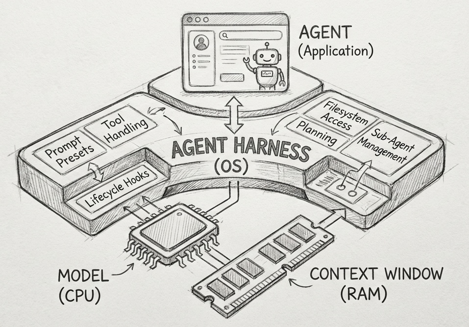

核心观点：从"唯模型论"到"系统思维"
2026年，AI领域正在经历一场静悄悄的革命。行业的焦点从"模型有多聪明"转向了"系统有多可靠"。过去几年，我们习惯于追逐排行榜上的数值提升，却忽略了一个关键问题：一个能在单轮测试中解出难题的模型，在执行数百次工具调用、持续数天的工作流时，可能会在第50步就开始出错。
这种被称为"模型漂移"的现象，正在成为AI落地的最大障碍。而解决这个问题的核心答案，就是我们今天要探讨的 Agent Harness 和 Harness Engineering。
从2023年到2026年，AI开发经历了三次重要升级：提示词工程 → 上下文工程 → Harness Engineering。这标志着AI开发从面向模型的思维彻底转向了面向系统的思维。
背景：静态排行榜的局限性
当前AI评价体系的困境
过去几年，整个AI行业的评价体系都围绕着静态排行榜和基准测试展开。我们习惯性地用"模型A是否击败模型B"来衡量技术进步，各大实验室也在为排行榜上的微小提升不断投入资源。
然而，一个不容忽视的事实是：顶级大模型在静态排行榜上的差距正在持续缩小，甚至不足1%。而这1%的差距，在真实世界的复杂任务中毫无意义，因为它无法检测到模型的耐久性——即模型在执行数百次工具调用、处理多步骤逻辑时，能否始终遵循初始指令、正确完成中间推理。
从对话机器人到自主Agent的跨越
更关键的是，随着AI从单一的对话机器人进化为能自主处理任务的Agent，我们需要的不再是能解决单点问题的模型，而是能执行多日工作流、完成端到端任务的系统。
这就要求我们必须跳出"唯模型论"的思维，构建一套能支撑模型长时可靠运行的基础设施。而这套基础设施，就是Agent Harness。
核心概念：什么是Agent Harness？
定义与本质
从字面意思来看，harness是马的套具——一匹再好的马，如果不给它套上马具，也没有办法让它长时间工作。
菲尔·施密德（Philipp Schmid）在文章中给出了一个清晰的定义：Agent Harness是包裹在AI模型外围，专门用于管理长时运行任务的软件基础设施。 它不是Agent本身，也不是单纯的开发框架，而是负责规范、引导、管控Agent运行全生命周期的系统。其核心目标是保证Agent在长时任务中始终保持可靠、高效、可调控的状态。
经典类比：计算机架构
为了更直观地理解Agent Harness的定位，我们可以用计算机架构做一个类比（这也是目前行业内公认的、最能体现Agent Harness核心价值的解释）：
| 组件 | 对应角色 | 功能 |
|---|---|---|
| AI模型 | CPU | 提供原始处理能力，是算力核心 |
| 上下文窗口 | RAM | 有限的、易失的工作内存，临时存储任务信息 |
| Agent Harness | 操作系统 | 管理和调度资源、优化内存使用、提供标准驱动和运行环境 |
| AI Agent应用 | 应用程序 | 运行在操作系统之上，实现特定业务逻辑 |

Agent Harness的核心价值是为Agent提供一个标准化、稳定化的运行环境，让开发者无需重复构建基础能力，而是专注于Agent的业务逻辑设计。
Agent Harness vs. Agent Framework vs. Orchestration
用一个打车的例子来理解三者的区别：
| Framework | Orchestration | Harness | |
|---|---|---|---|
| 打车类比 | 车 + 司机 + 地图 | 路线规划 + 调度系统 | 运营后台 + 监控系统 |
| 解决什么问题 | 没有车跑不起来 | 怎么走的问题 | 跑得好不好的问题 |
- Framework（框架）：提供工具调用接口、推理循环模板等基础积木，开发者需要自行搭建完整系统
- Orchestration（编排）：把多个组件按一定逻辑组织、调度、连接，协同完成更复杂目标
- Harness（管控系统）：开箱即用的成品系统，整合全套预设能力和最佳实践，包括提示预设、工具调用确定性处理、生命周期钩子
当开发者基于Harness构建编程Agent时，无需自己编写文件读取、代码编辑、终端执行的整合逻辑，因为Harness已经提供了标准化的工具调用流程；也无需担心长时任务中的上下文溢出，因为Harness已经内置了上下文管理机制。
行业现状：Agent Harness的发展阶段
通用型Harness：稀缺但关键
目前，通用型Agent Harness依然稀缺，但已有几个典型代表：
目前通用型Agent Harness的典型代表，依托Claude Agent SDK实现标准化的Agent运行时。
- 并非简单的API包装器，而是完整的Agent管控系统
- 内置各种生产级工具（文件操作、终端执行、代码编辑等）
- 通过权限配置、系统提示词设定等方式精准管控Agent行为边界
在原有框架基础上增加了长时任务的状态管理。
- 支持工具调用的异常重试
- 提供多Agent的协同调度能力
- 试图打造标准化的通用Agent运行环境
垂直型Harness：专业化探索
在垂直领域，所有的编码CLI工具（如Cursor、Replit Agent等）其实都可以被看作是专用型的Agent Harness。它们针对编程这个特定场景，提供了：
- 标准化的工具调用流程
- 上下文管理策略
- 结果验证机制
本质上是为编程Agent打造的专属管控系统。
未来趋势
通用型Harness的标准化和垂直型Harness的精细化，将是2026年AI基础设施开发的核心方向。
工程实践
首先要有一个核心认知：Harness Engineering不是一蹴而就的工作。Manus在六个月内重写了五次Harness，LangChain在一年内重构了四次架构，OpenAI团队花费5个月才构建出一套成熟的管控框架。
三个原则
六个模块
为什么Harness比模型更重要？
弥合基准测试与真实世界的鸿沟
Agent Harness从三个核心维度搭建起了基准测试与用户体验之间的桥梁：
让用户将最新模型直接接入实际用例和约束条件，快速测试模型在真实工作流中的表现，避免"实验室效果好、生产环境崩"的问题。
Harness通过整合成熟的工具和最佳实践，让开发者能构建出体验一致、性能稳定的Agent，确保用户能真正触达模型的潜在能力。
将Agent的多步骤工作流转化为结构化的运行数据，记录每一步的工具调用、推理过程、结果输出。开发者可以对这些数据进行记录、评分、分析，找到性能瓶颈和错误点。
新旧护城河的转变
| 维度 | 旧护城河 | 新护城河 |
|---|---|---|
| 核心资产 | 模型质量（GPT-4、Claude、Gemini） | Harness质量 |
| 差异化来源 | 模型质量创造优势 | 工程投入创造优势 |
| 可复制性 | 可以在6个月内训练出有竞争力的模型 | 无法从Hugging Face下载Harness |
| 时间成本 | 相对较短 | 需要数千小时的工程投入 |
构建可靠的Harness需要数千小时的工程投入。Manus花了六个月进行五次重写，LangChain花了一年进行四次架构迭代。早期构建出优秀Harness的公司拥有结构性优势——你无法从Hugging Face下载Harness，必须构建、测试、失败、学习、重建。
从提示词工程到Harness Engineering
从2023年到2026年，整个AI行业的认知正在完成三次重要的升级：
解决的问题：单轮指令的设计问题
解决的问题：多步骤任务的上下文管理问题
解决的问题：长时任务的运行管控问题
过去，我们将AI开发的严谨性寄托在模型的算法和参数优化上，希望更好的模型能神奇地解决所有的落地和维护问题。
但现在，行业终于开始探索严谨性的实际落地方式：通过Harness Engineering，设计出能让AI稳定运行的环境、能实现持续优化的反馈环、能精准管控AI行为的控制系统。
这正是2026年AI发展最珍贵的变化，也是未来人工智能发展的核心方向。
参考资料
- 1. Philipp Schmid, "The importance of Agent Harness in 2026"
- 2. OpenAI, "Harness engineering: leveraging Codex in an agent-first world"
- 3. Birgitta Böckeler, "Harness Engineering" (Martin Fowler's Blog)
- 4. Rich Sutton, "The Bitter Lesson"
- 5. LangChain, "Agent Frameworks, Runtimes, and Harnesses"